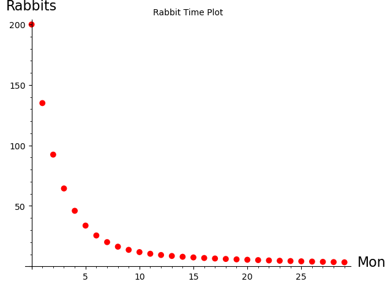
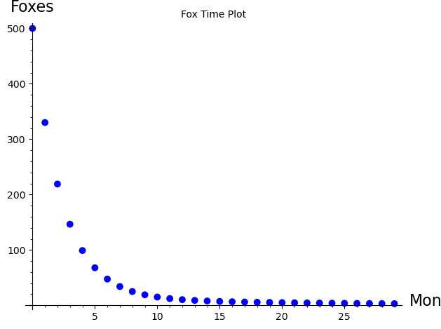
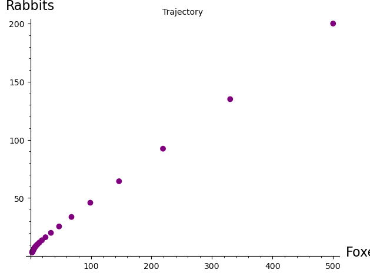

Section 8.4 A Linear Predator-Prey Model
Consider a forest containing foxes and rabbits where the foxes eat the rabbits for food. We want to examine whether the two species can survive in the long term. A forest is a very complex ecosystem. So to simplify the model, we use the following assumptions:
The only source of food for the foxes is rabbits and the only predator of the rabbits is foxes.
Without rabbits present, the foxes would die out.
Without foxes present, the population of rabbits would grow.
The presence of rabbits increases the rate at which the population of foxes grows.
The presence of foxes decreases the rate at which the population of rabbits grows.
We will model these populations using a discrete dynamical model. Each state of the system consists of the population of foxes and rabbits at a point in time. Since this state consists of two components, this is a two-dimensional discrete dynamical system.
To create our model, we first need to define some variables. Let
As in the bacteria model, the assumptions are stated in terms of rates of change, \(\Delta F_n = F_{n+1} - F_n\) and \(\Delta R_n = R_{n+1} - R_n\text{.}\) There are many ways we could model these rates of change with the assumptions. We will create a linear model here. In the next section we will create a non-linear model.
Assumptions 2 and 3 deal with the rates of change of each population in the absence of the other. A reasonable way to model these is to say that the rates are proportional to the populations. This gives the difference equations
where both \(a\) and \(d\) are between 0 and 1. The constant of proportionality in (8.4.1) is negative to reflect the fact that the foxes would die out (a negative rate of change) without the rabbits. The coefficient in (8.4.2) is positive because the population of rabbits grows (a positive rate of change) without the foxes.
Now, assumptions 4 and 5 say that these rates either increase or decrease in the presence of the other species. So to incorporate these assumptions, we simply add one term to each of the above equations, yielding
where \(b\) and \(c\) are non-negative. Note that the added term in the fox equation is positive to reflect the fact that the presence of rabbits increases the rate at which the population of foxes grows. The added term in the rabbit equation is negative because the presence of foxes decreases the rate at which the population of rabbits grows.
Rewriting Equations (8.4.3) and (8.4.4) yields our model in the form of a system of linear equations:
Because our model has the form of a system of linear equations, it is called a two-dimensional linear discrete dynamical system. While we could write the model in matrix form and apply linear algebra methods to solve it, we will take a strictly graphical approach to analyze the model.
The parameters \((1-a)\) and \(b\) are called the fox death and birth factors, respectively, while the parameters \(-c\) and \((1+d)\) are called the rabbit death and birth factors, respectively.
Suppose, for example, we start with 500 foxes and 200 rabbits in our forest, and have a fox death factor of 0.5, a fox birth factor of 0.4, a rabbit death factor of -0.17, and a rabbit birth factor of 1.1. Let's see what happens over time.



The graphs of rabbits versus month and foxes versus month are called time plots. The curve in the graph of rabbits versus foxes is called a trajectory of the system. The plane on which a trajectory is drawn is called the phase plane. Notice that the trajectory tends toward the origin (0 foxes and 0 rabbits). This means that both species eventually die out. This is also shown in the time plots. If we change the initial populations, we note that the trajectories always tend toward the origin. This indicates that the populations always die out, regardless of the initial populations.
As in a one-dimensional discrete dyanmical system, two-dimensional systems can have an equilibrium.
Definition 8.4.2.
Let
be a two-dimensional discrete dynamical system. A point \((a,b)\) is an equilibrium point if \(a_n=a\) and \(b_n=b\) for all \(n\) whenever \(a_0=a\) and \(b_0=b\text{.}\)
Stated another way, \((a,b)\) is an equilibrium point if \(f(a,b)=a\) and \(g(a,b)=b\text{.}\) For the system given by (8.4.5) and (8.4.6), the origin, \((0,0)\) is an equlibrium point since
Since the trajectories appear to be attracted to the origin, we have graphical evidence that the origin is an attracting equilibrium. If the trajectories tended to go away from the origin, we would say the origin is a repelling equilibrium.
Exercises Exercises
1.
Implement a slider in the given code to vary the rabbit death rate from 0 to -0.50 in increments of 0.001. Are there any changes in the overall behavior of the system at any point? (This change of behavior caused by a change in the value of a parameter is called a bifurcation.)
2.
Suppose the rabbit death factor is -0.05 and the other factors are as shown as in the above code. For initial populations of 500 foxes and 200 rabbits, we saw that the populations grow without bound in the long–run. Here we will investigate whether this is true for all initial populations.
(a)
Fix the initial rabbit population at 200. What happens if the initial fox population increases or decreases? How large can the initial fox population be for both species to survive?
(b)
Fix the initial fox population at 500. What happens if the initial rabbit population increases or decreases? How small can the initial rabbit population be for both species to survive?
3.
Investigate sensitivity to the parameter rabbit birth factor using values of the other parameters and the initial populations given in the code (i.e. increase and decrease the rabbit birth factor and observe what happens to the populations in the long–run).
(a)
For what values of the rabbit birth factor do the populations die out? For what values do the populations grow without bound? Are there any values for which the populations appear to reach an equilibrium?
(b)
A forest ranger knows that the populations will both die out under the parameters in the initial code above. To prevent this, she advocates building rabbit shelters in an attempt to increase the rabbit birth factor. Does this model predict that this would have any effect on the survival of the populations? Why or why not?
4.
With the parameters and the initial fox and rabbit populations given, both populations die out. A hunting club claims that if they were allowed to kill (or harvest) a few foxes each month the populations would survive.
(a)
Modify the model to include this harvesting. Does the model support this claim? If it does, how many foxes could be harvested each month for both species to survive?
(b)
A conservation group claims that more foxes should be put into the forest each month for the populations to survive. Does your model support this claim?